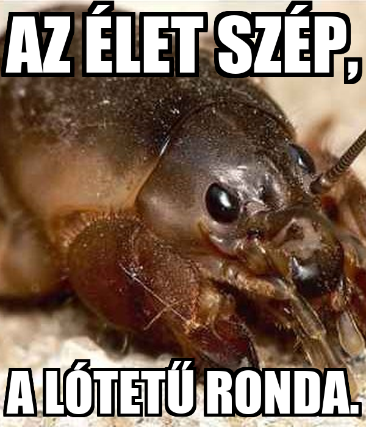

Cég méret

- 50 főnél nagyobb alkalmazotti létszám
- 1 Mrd éves forgalom felett
- KKV-k
- Nagyvállalatok
Iparág

- Bármilyen iparági terület
- Államigazgatás
- Nagy ügyfélkörrel rendelkező vállalatok
- Üzletileg kritikus területen működő vállalkozások
Kapcsolat felvétele

Az egyedi szoftverfejlesztés folyamata az EuroMACC-nél
Egy bonyolultabb rendszer esetében szükség lehet az alkalmazottak betanítására, illetve a rendszerről szóló dokumentáció átadására. Az üzemeltetés során biztosítjuk a rendszer korszerű alapokon nyugvó futtatását, ezen kívül pedig lehetőséget nyújtunk a további fejlesztési igények kielégítésére. A nulladik lépést azonban Önnek kell megtennie az alábbi űrlap kitöltésével, hogy kollégánk egy napon belül felvehesse Önnel a kapcsolatot:

Sales kollégáink
További információt szeretne megtudni szolgáltatásainkról vagy termékeinkről? Sales kollégáink állnak rendelkezésére. Keresse őket az alábbi elérhetőség bármelyikén.
Kereskedelmi igazgató
Sales Manager

Sales Manager
Key Account Manager